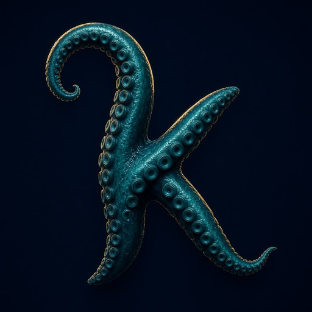
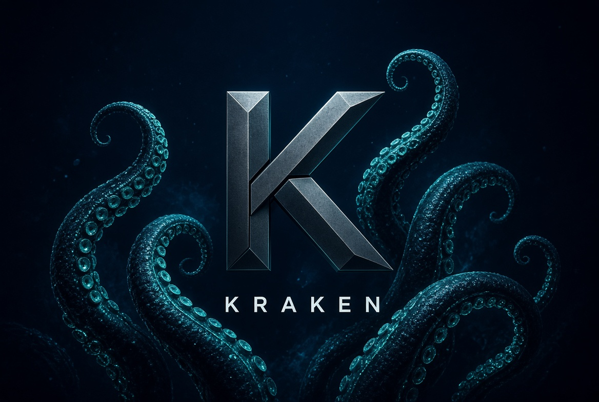
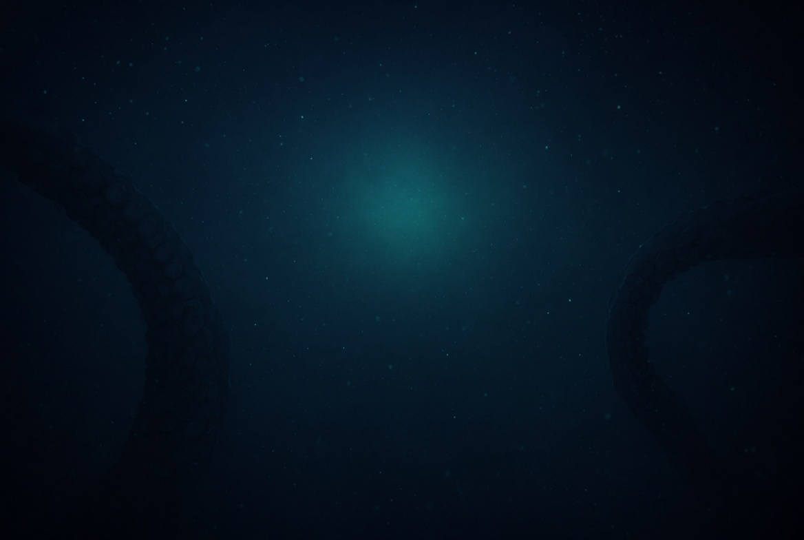
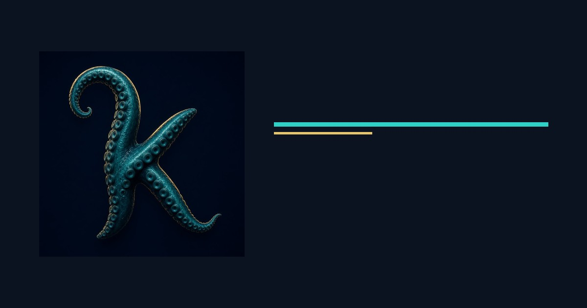
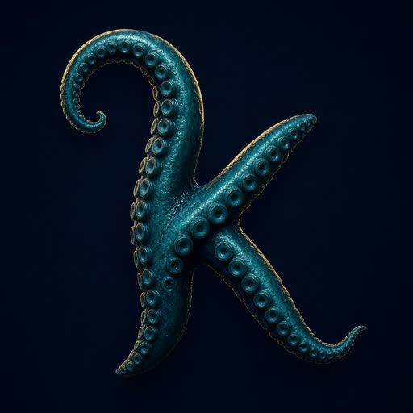

Runs on your machine. Payload in, JSON out. The cloud is optional for catalog and keys.

KRAKEN
{{ tagline }}
Local runner. Any-language tentacles. Paid arms on an MIT core.
MIT coreLocal firstAny language
See what people runcurl -fsSL https://kraken.topta.co/install.sh | sh # then: kraken doctor
Why use it
You already have scripts, APIs, and a laptop. Kraken is the one local binary that turns those into named arms with licenses, hooks, and a queue — without standing up another SaaS.
A tentacle is a binary + YAML. Python, Go, Rust, PHP, a shell script — same contract.
MIT core. Premium tentacles check a key. You can sell weather-pro without forking the runner.
Workflows chain responses. Hooks fire before/after. Dependencies resolve before you run.
Payloads stay on the box unless an arm you chose sends them. Keys live in ~/.kraken/keys.
Ship without four new vendors. Doctor and monitor for the jump host.
Examples
Copy these. They are the same commands on the explainer.
curl -fsSL https://kraken.topta.co/install.sh | sh kraken doctor ls ~/.kraken
kraken tentacle add examples/tentacles/geo
kraken run geo lookup --payload '{"ip":"1.1.1.1"}'
kraken tentacle add examples/tentacles/weather-pro kraken license set weather-pro YOUR_KEY kraken run weather-pro forecast --compose
kraken workflow run examples/workflows/geo-then-weather.yaml # $geo.city interpolates into weather-pro
kraken tentacle add examples/tentacles/docker-env kraken tentacle add examples/tentacles/hotreload kraken workflow run examples/workflows/dev-loop.yaml
kraken tentacle add examples/tentacles/vault kraken tentacle add examples/tentacles/store kraken workflow run examples/workflows/secure-share.yaml
Product
Core is one executable and a .kraken directory. This page is branding.
$ {{ typed }}
Catalog
{{ item.blurb }}
{{ (item.actions || []).join(', ') }}
Premium tentacles
{{ redeemMsg }}
Watch the stack
Snapshot local health and ping the control plane in one workflow.
kraken monitor --url https://api.topta.co kraken workflow run examples/workflows/monitor.yaml kraken license upgrade weather-pro --plan beta
Docs
Contract, hooks, workflows, licenses, doctor · Nyx Beta · Register
Media




Pricing
MIT core. Paid arms and a future catalog relay. Full split.
FAQ
Do I need an account to install? No. curl | sh then kraken doctor.
Can I write an arm in Node / Go / PHP? Yes. Same JSON contract. Languages.
How do I sell an arm? license: premium and list it. Publish.